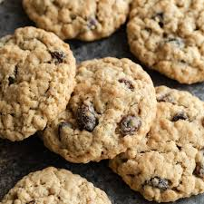

Oatmeal Cookies

Description
Oatmeal raisin cookies are a healthier alternative to chocolate
chip cookies, made out of oatmeal and raisins (hence the name).
Ingredients
- 3/4 cup butter, softened
- 1 cup packed brown sugar
- 1/2 cup granulated sugar
- 1 tsp baking powder
- 1/4 tsp baking soda
- 2 eggs
- 1 tsp vanilla
- 1&3/4 cups flour
- 2 cups rolled oats
- 1 cup raisins
Steps
- In a large mixing bowl beat butter with an electric mixer on medium
to high speed for 30 seconds. Add brown sugar, granulated sugar, baking
powder, and baking soda. Beat until combined, scraping sides of bowl
occasionally. Beat in eggs and vanilla until combined. Beat in as much
of the flour as you can with the mixer. Stir in any remaining flour. Stir in
oats and raisins
- Drop dough by rounded teaspoons 2 inches apart onto an ungreased cookie
sheet. Bake in a 375 degree oven for 8 to 10 minutes or until edges
are golden. Cool on cookie sheet for 1 minute. Transfer to a wire
rack and let it cool
- Bon Appetit!